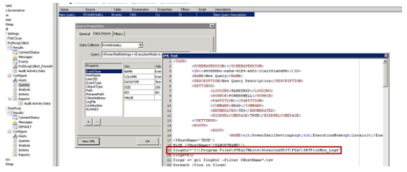
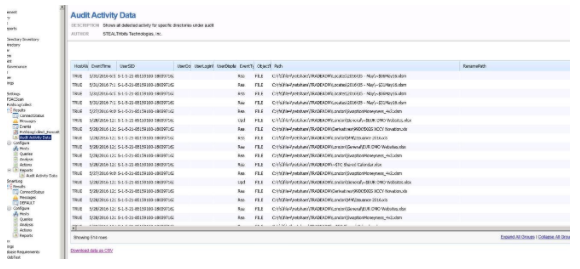

Summary: Uses PowerShell to parse activity event logs for a given host. May be adapted to events selectively based on modifying the Regular Expression
Issue: If time is tight or if FSAC and SmartLOG aren't working properly, or would require forklifting of data to collect relevant file system activity data, this is a good and flexible alternative
Instructions: The
JOB_PoShLogCollect PowerShell job in
\\sbitsinc.com\public\Escalation\KB Attachments pulls in the events
from a specified host (you only have to modify the log folder location as shown below):

After importing, it uses ADI data to resolve SIDs

This job should be able to be used for pulling a report of activity within a
certain directory or by a certain user (you just have to modify the RegEx used in the
PowerShell).
Note: Due to Core/PowerShell Data Collector limitations, this solution does not
support Unicode characters
Product:
StealthAUDIT
Module: SA
- DC - FSAA - Activity;SA - DC - PowerShell
Versions:
V6.x, V7.x
Legacy Article ID:
1486